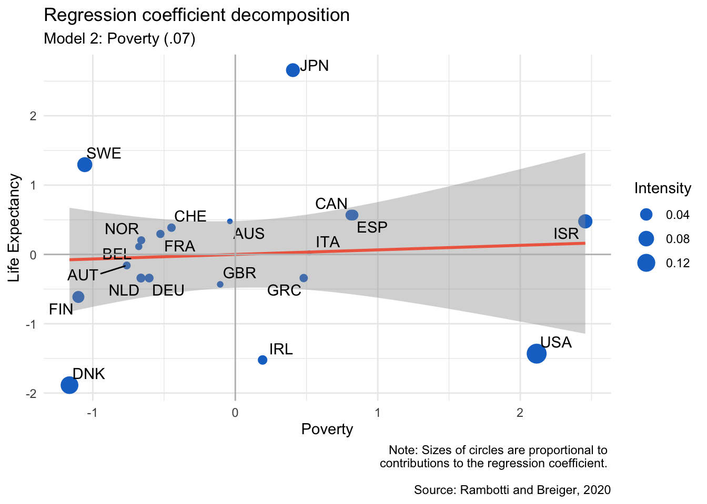

These are some of my projects, for work or fun.

In this project, I show how to use R to turn regression models "inside out." This is a method developed by Arizona Regents Professor of Sociology Ronald Breiger and his colleagues. Click here to see the project. A PDF version of the tutorial is available here
Link: Project page
What it is: 1–2 sentences.